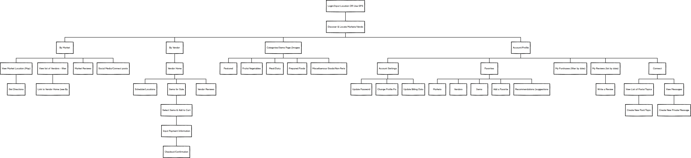
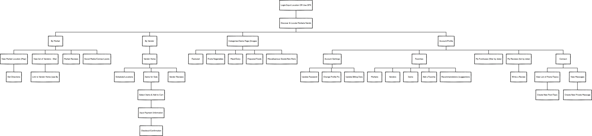

Summary
Bon Forage is a mobile application which would allow consumers to locate Farmers' Markets near them as well as specific farmers or vendors, along with the ability to source, reserve and pay for local products by incorporating a mobile payment solution. It also provides vendors with an online storefront, inventory control and a payment solution.
Challenges
In recent years, consumers have shown increased interest in purchasing goods that are either grown or made locally. Consumers interested in "shopping local" often utilize farmers markets as their primary resource for purchasing these goods. The consumer to be able to easily locate farmers markets, vendors and their goods on specific days times. They also wanted to be able to view available goods and be able to reserve these goods and needed a streamlined payment solution. On the vendor side, many travel and set up shop several days a week in the area’s farmer’s markets to sell their goods. They have issues gaging interest in product and the necessary amount of inventory needed, and are tasked with developing their own marketing materials, product information, as well as a simple, unified way process payments.
In order to understand the patterns and behavior of consumers and vendors who are associated with Farmers Markets, I distributed a survey via survey monkey

Solution
I designed this app in order to provide the best experience for users and vendors to locate markets and specific goods, create opportunities for more sales and better inventory control for vendors as well as streamlining the transactions between vendors and consumers. My goal was to understand more about the different personalities who attend farmers markets as well as create a tool that will enhance the experience.
The consumer will be able to view items available (including quantity) and purchase these items for pick-up. The app would allow customers to reserve/purchase specific items off-site, helping them to avoid missing out on those limited, high-demand items. Returning users can view their previous transactions, create lists of favorite markets, vendors and items (with notifications when their favorites are available/unavailable, etc.) as well as communicate directly with vendors about their orders. The consumer would have the ability to read and provide public reviews for the market, the vendors and the items they've purchased from much like Yelp. The app would also include a live "social" feed with check-ins and latest reviews. There would also be an area for direct conversations between all users: vendor-consumer, vendor-vendor, consumer-consumer.
In turn, the vendor would have the opportunity to create a virtual storefront and advertise their product offerings, their locations by day and time as well as have a more accurate idea of the inventory they should have in stock at the market that day, based on their pre-paid reserved goods. The vendor would also be able to send notifications sharing their daily location as well as specific items will be available
Process
Consumer Personas
| First-time App User: | Experienced/Returning User: |
|---|---|
| may be a visitor/non-local to area | |
| not familiar with local markets | |
| wants to locate markets - get directions to market | |
| reserve/order from markets/vendors, see available options, pricing | |
| see reviews/review the experience | |
| busy, local consumer - would like to make fast, efficient, and eco-conscious choices | |
| needs to see available items | |
| ability to reserve & purchase items in advance for fast pick up | |
| wants suggestions for new markets, vendors based on past purchases, favorites, etc. |
User Flows
I designed three user flows -- Onboarding for all users which would then split to Consumers & Vendors, respectively.
 
The second phase of this project explores vendor on-boarding. To see that user flow click here.

The second phase of this project explores vendor on-boarding. To see that user flow click here.
Branding
The color palette relies on the specifications of Google's Material Design Palette and the usage of the greens reflect the elements of the brand: natural and eco-friendly.

Wireframes


User Testing + Results
I used InVision to create a prototype so that users could test the design